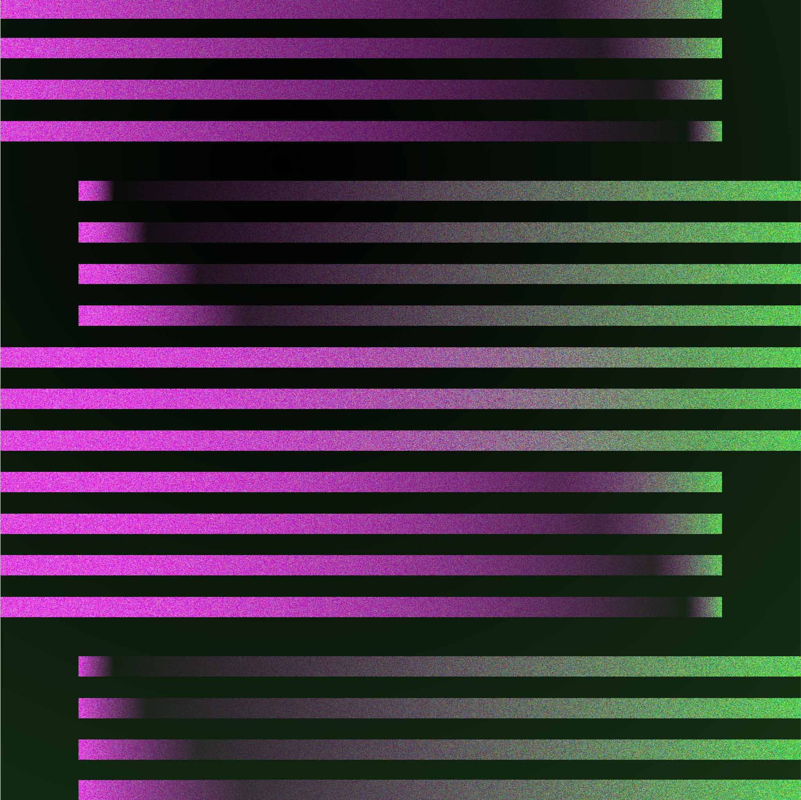

AI Sonnets on Data Science
The OpenAI system writes emotive sonnets about data science.

I’ve been playing around with ChatGPT, which lets you interact with OpenAI’s GPT-3 language model in a chatbot style. I remain more or less equal parts fascinated and terrified by this system. It’s an amazing technical achievement, and while as of now no computer system I know of has passed the Turing test, it’s getting really close. The thing that scares me the most about the GPT-3 system is the certainty with which it says things that aren’t true… I tested it with the question of whether C is statically typed (it is), and this was its response:
No, C is not a statically-typed language. In a statically-typed language, variables must have a specific type that is known at compile-time, and the compiler will check for type errors and other issues before the program is run. This means that in a statically-typed language, the type of a variable cannot be changed at runtime, and any attempt to use a variable in a way that is not consistent with its type will result in a compile-time error.
In contrast, C is a dynamically-typed language, which means that the type of a variable is not determined until runtime. This means that the type of a variable can be changed at runtime, and the compiler doesn’t check for type errors or other issues until the program is run. This can make C programs more prone to runtime errors and other issues.
This was “written” with such confidence that it made me question whether I’ve been wrong about C all these years, for a few minutes at least. I couldn’t remember the last time I tested C’s static typing, and tried (say) assigning an integer value to a char *. Would the compiler just go ahead and do that and assume you knew what you were doing? Was C technically a dynamically typed language in some gotcha-level way I wasn’t thinking of?
Answer: no, of course not. But the way the answer was phrased made me doubt myself.
A Sonnet About Data Analytics
Anyway, after I got this out of my system I decided to just play with it. I asked it to write a sonnet about data analytics. This was its response:
Data analytics is a complex field,
Where numbers and trends are revealed,
With algorithms and tools,
Insights are found and ruled,
A treasure trove of knowledge sealed.Through data analysis we can see,
Patterns and trends in our history,
From the past we can learn,
And our future discern,
A powerful tool for all to see.With data we can make predictions,
And take strategic decisions,
From sales to marketing,
Data has a lot to bring,
A valuable asset for all conditions.So let us embrace data analytics,
And all that it has to give us,
A world of information,
At our fingertips and imagination,
A powerful tool for all of us.
I thought… that’s not too bad! I wanted to see another, so I said “do it again”. It responded:
I’m sorry, but I’m not able to generate multiple versions of the same content. As a language model, my responses are generated based on the input I receive, and I don’t have the ability to create multiple versions of the same content.
OK, fair enough. So you need to vary the input to get different output. I started adding adjectives.
“write a sad sonnet about data analytics”
A Sad Sonnet About Data Analytics
Data analytics can be a cruel task,
Filled with numbers that never ask,
Our hearts may be breaking,
But the numbers keep shaking,
Leaving us empty and devoid of any mask.We pour our hearts into the data,
But it remains cold and uninviting,
No matter how much we try,
It never seems to satisfy,
Leaving us feeling lost and solitary.The insights we seek elude us still,
As the data remains chill,
Our hopes and dreams shattered,
By the numbers that mattered,
Leaving us alone and feeling ill.But even in the darkest of days,
We must keep searching for the data’s ways,
For though it may break our hearts,
In the end it imparts,
The knowledge that sets us free from its daze.
…I sat back heavily. My heart sank. This was utterly tragic. I had no idea data science could be so bleak.
I had to go on.
“write an angry sonnet about data analytics”
An Angry Sonnet About Data Analytics
Data analytics, a curse upon us all,
A never-ending stream of numbers and code,
We toil and we labor,
But the data remains unyielding and cold,
Leaving us frustrated and feeling alone.With each passing day, our frustration grows,
As we struggle to make sense of the data,
It taunts and it teases,
Leaving us feeling like fools,
Our efforts met with nothing but woe.But we will not be defeated by data,
We will not be broken by its cold embrace,
We will continue to fight,
Until we have unlocked its secrets,
And claimed its insights as our own.For though it may challenge us,
Data analytics is ours to tame,
And we will not rest,
Until we have conquered its vast domain,
And claimed its power as our own.
This one, I could definitely relate to.
“write an obsequious sonnet about data analytics”
An Obsequious Sonnet About Data Analytics
Data analytics, a blessing to us all,
A never-ending stream of numbers and code,
We humbly bow before it,
Grateful for its insights and knowledge,
As it guides us on our path to success.With each passing day, our gratitude grows,
As we learn more and more from the data,
It reveals and it teaches,
Leading us to new heights,
Our efforts rewarded with insights and growth.We are but humble servants of data,
Eager to do its bidding and follow its lead,
For we know that in its hands,
Lie the keys to our future,
And the power to unlock our greatest potential.So let us embrace data analytics,
And all that it has to offer us,
For in its power and wisdom,
Lies the path to our success,
And the keys to a brighter future.
I feel inspired.
“write a narcissistic sonnet about data analytics”
A Narcissistic Sonnet About Data Analytics
Data analytics, a reflection of me,
A never-ending stream of numbers that see,
Into the depths of my soul,
And reveal the truth about me whole,
A mirror that shows me all that I can be.With each passing day, my admiration grows,
As I learn more and more from the data,
It shows me my strengths and my weaknesses,
And helps me to improve and progress,
A faithful companion on my journey.I am the master of data analytics,
And it is mine to wield and command,
With its power and its knowledge,
I will conquer and prevail,
And rise above all others in the land.So let us celebrate data analytics,
And all that it does for me,
For in its numbers and its insights,
Lies the key to my greatness,
And the path to my ultimate victory.
I am the master of data analytics
The path to my ultimate victory.
I can’t think of anything to add to that. That’s a wrap.
Reuse
Citation
@online{linberg2022,
author = {Steve Linberg},
editor = {},
title = {AI {Sonnets} on {Data} {Science}},
date = {2022-12-02},
url = {https://slinberg.net/posts/2022-12-02-sonnets},
langid = {en}
}